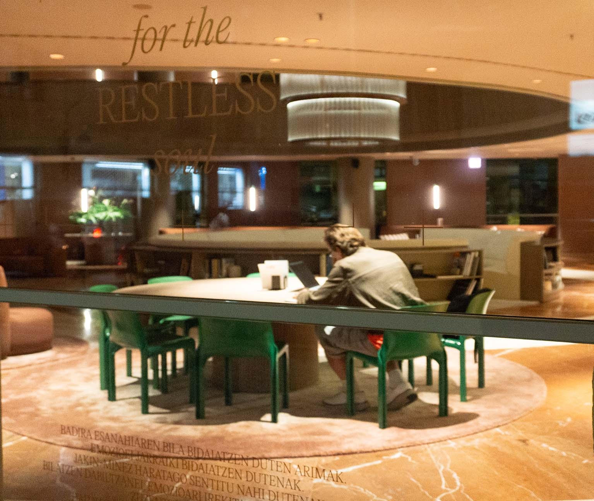
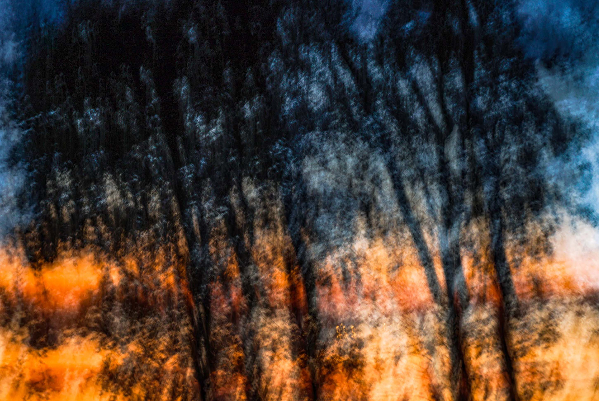
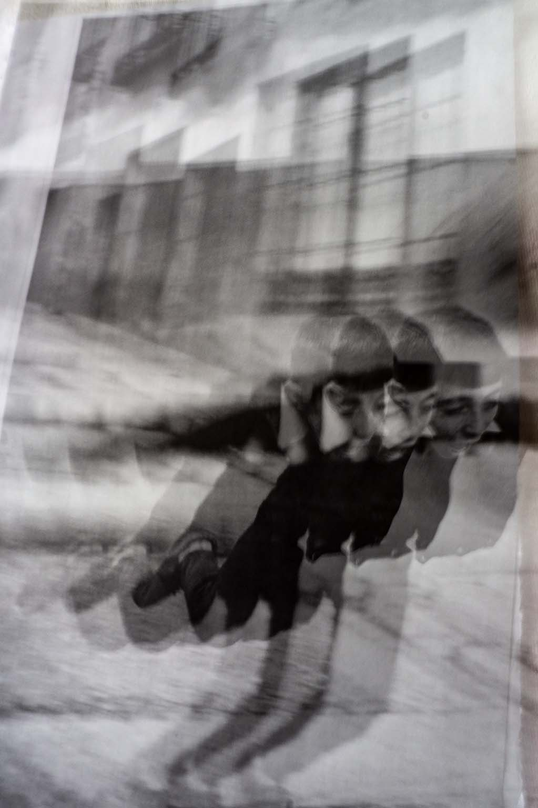
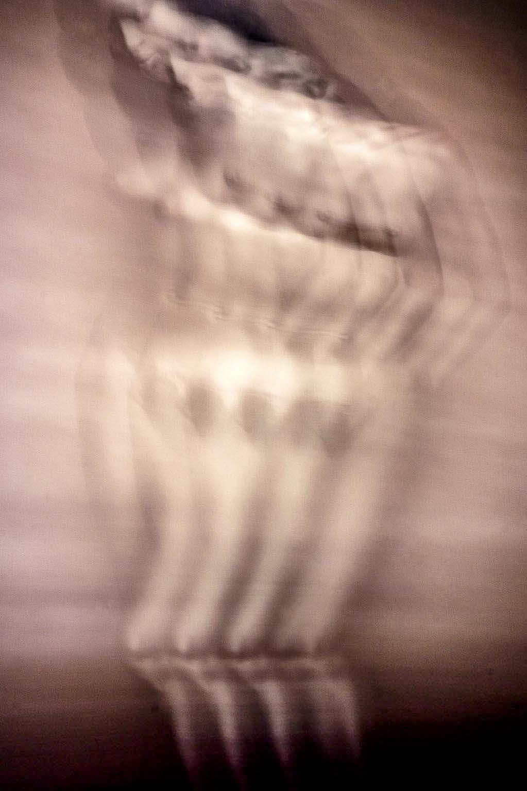
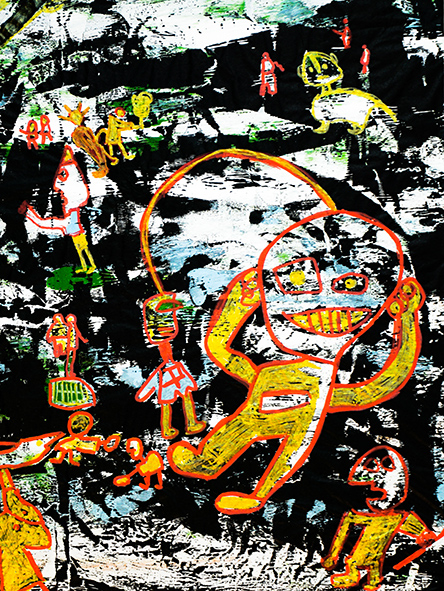
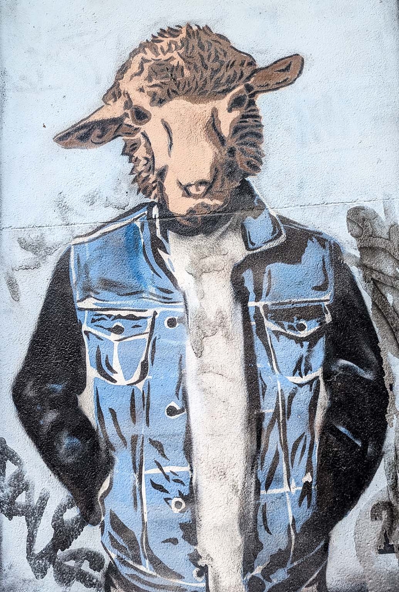
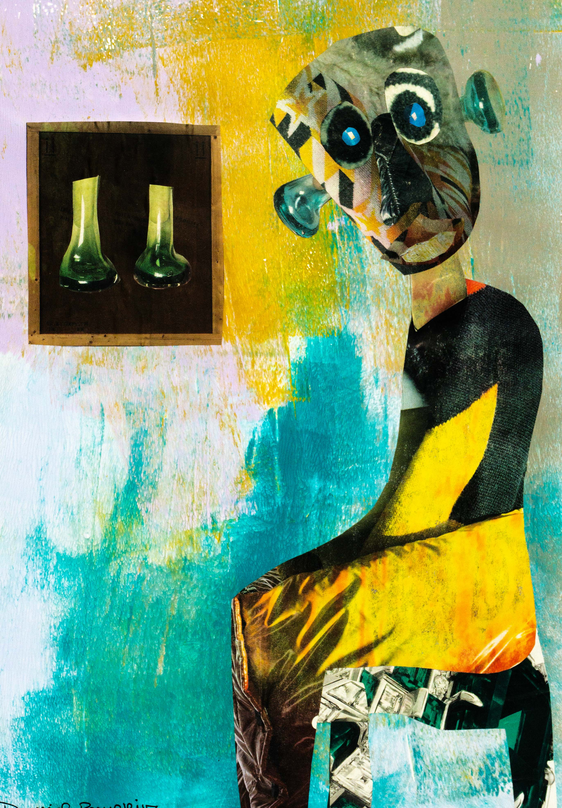
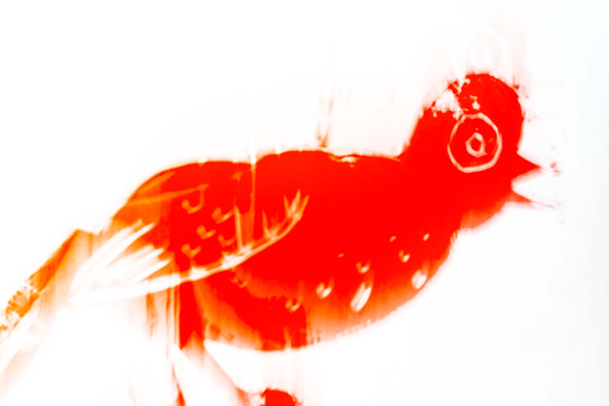

Mira, este libro no viene a salvarle el pellejo a nadie, y menos mal. Lo que hay en estas páginas es el tedio espeso de los martes, ese gris de pasillo de oficina que se te pega a la solapa y la constatación bastante fea de que hacernos viejos consiste, en realidad, en perder los modales y acabar con los zapatos hechos polvo. Remeseiro arma el fotolibro a medias exactas: cincuenta por ciento de texto y cincuenta de imagen, dos cosas que se miran a los ojos sin regalarse los oídos.
Las fotos no están ahí para quedar bien en la mesilla. Salen movidas, con el temblor lógico de quien saca la cámara sin apagar el motor del coche o de quien tropieza con la propia prisa. Ese borrón de luz, de árboles batidos por el viento o de asfalto empapado cuenta exactamente lo mismo que el verso: el mareo sordo de abrir los ojos a las siete de la mañana, la inteligencia de los estorninos girando en círculos o el porrazo contra el suelo de la calle.
El primer paso es abrir los ojos y joderse;
el segundo, poner un pie en el suelo frío;
y el tercero, aguantar el tirón.
Al avanzar, te tragas el mareo
de otro madrugón de mierda.
Lo jodido es la tarea de hoy:
volver a doblar el lomo por el dinero de ayer.
El día no es ningún experimento.
Es una trituradora gris que te mide la paciencia,
mientras te callas los dientes
y tragas saliva para no mandarlo todo a la mierda.

| TÍTULO DE LA OBRA | PROYECTO BULD · LEVANTARSE |
| ESTRUCTURA | Obra poético-visual compuesta por texto y Fotografía Documental Urbana |
| UBICACIÓN & AÑO | A Coruña, Galicia 2026 |
Primero prendieron fuego al monte.
Luego nos vendieron
la manguera y la foto.
Montaron un hipódromo.
Y ahora organizan una consulta
para elegir el color de los caballos.

| TÍTULO DE LA OBRA | PROYECTO BULD · ANTICIPO |
| UBICACIÓN & AÑO | A Coruña, Galicia 2026 |
Red que da refugio,
suelo firme en la caída:
abrazo de asfalto.
Red que te atrapa,
pulso hueco de la pantalla:
amplifica el golpe.
Cae el equilibrio,
entre ceros y destellos,
nadie amortigua.

| TÍTULO DE LA OBRA | PROYECTO BULD · CAÍDA SIN RED |
| UBICACIÓN & AÑO | A Coruña, Galicia 2026 |
Conozco a un hombre que pesa 31 kilos.
El cuerpo planta cara a la agresión.
Quedan zonas que exige defender,
atrincherar el espacio exacto
donde empezamos a ceder.
Esa es la única alarma que queda.

| TÍTULO DE LA OBRA | PROYECTO BULD · DELGADEZ |
| UBICACIÓN & AÑO | A Coruña, Galicia 2026 |
Un pie marca el ritmo bajo la mesa.
Un movimiento simple que despierta a quien mira.
Está vestido, pero anda suelto.
Como si la cabeza llevara un calcetín
y los pensamientos bailaran sin pedir permiso.
Nada de grandes ideas.
Tocar la tristeza exacta del que busca algo
para saber que todavía siente.

| TÍTULO DE LA OBRA | PROYECTO BULD · ¿DÓNDE TIENES LA CABEZA? |
| UBICACIÓN & AÑO | A Coruña, Galicia 2026 |
«Me hago viejo aprendiendo» — Solón
Si la situación no empeora no hay motivo de alarma.
Me han entregado la intranquilidad y el temor
para siempre: es un alivio.
La amenaza a veces es más terrible que el golpe.

| TÍTULO DE LA OBRA | PROYECTO BULD · EL TORNILLO EN LA OREJA |
| UBICACIÓN & AÑO | A Coruña, Galicia 2026 |
No oigo nada, no veo nada
y lo que veo no lo ve nadie.
A los sepultureros les cuesta más
enterrar hombres felices.

| TÍTULO DE LA OBRA | PROYECTO BULD · ESPESA NEGRURA |
| UBICACIÓN & AÑO | A Coruña, Galicia 2026 |
Di que no sabes.
Esto no es lluvia,
ahora lo sabemos.
Es hora de salir,
salir para entrar.
Hay pájaros dando vueltas:
son estorninos
iniciando el murmullo.

| TÍTULO DE LA OBRA | PROYECTO BULD · MURMURATION |
| UBICACIÓN & AÑO | A Coruña, Galicia 2026 |